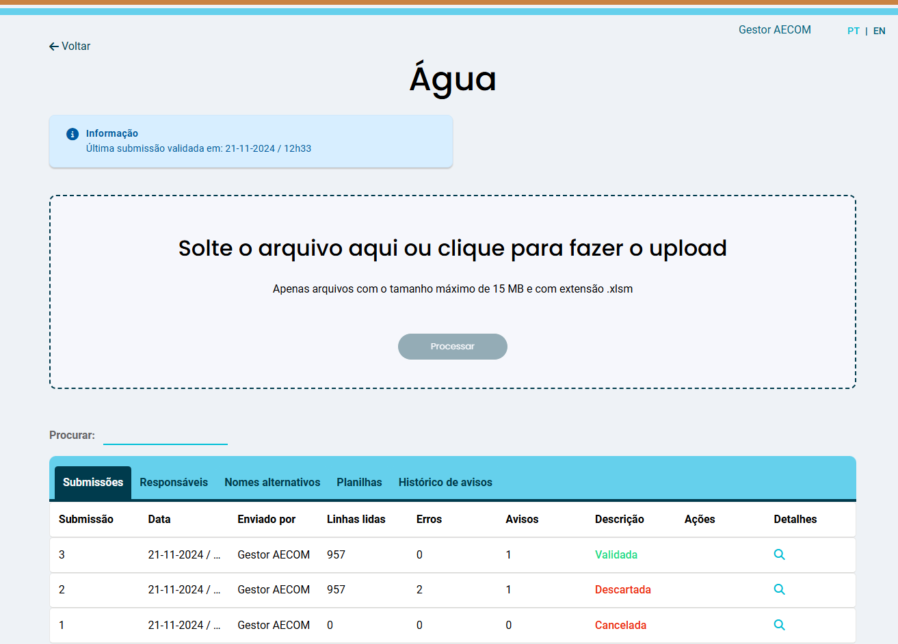
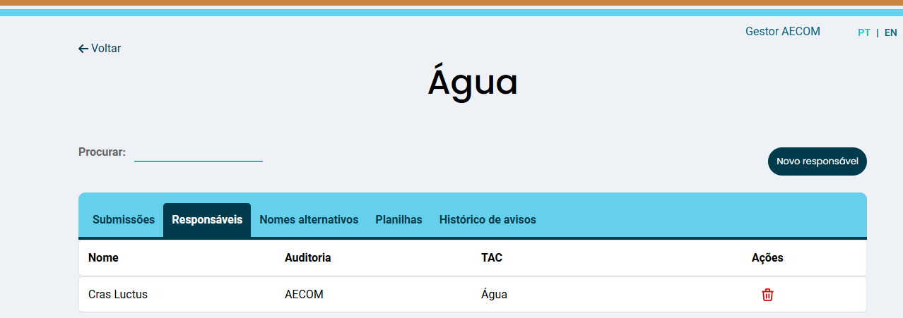
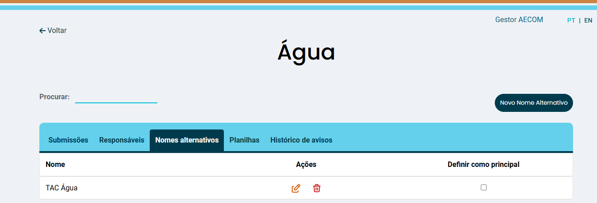
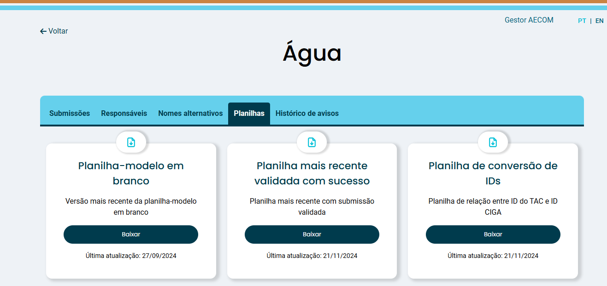
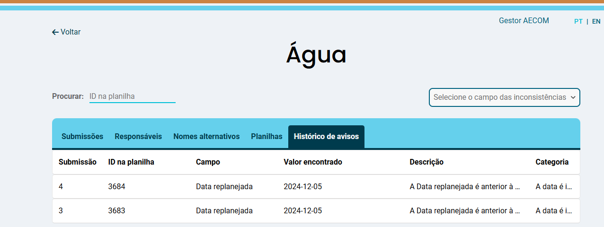
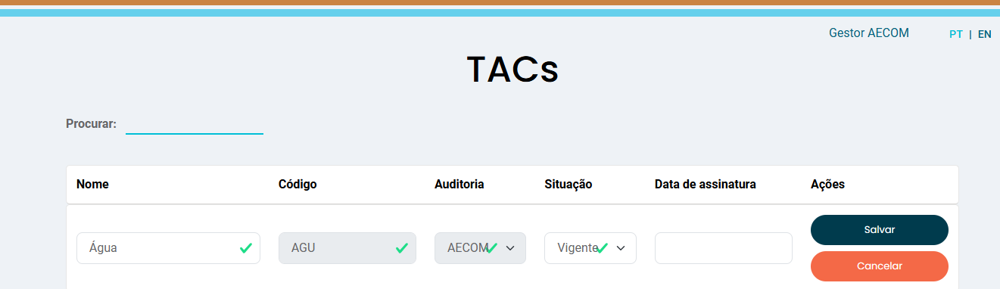

5 TACs
A tela TACs exibe uma lista dos TACs relacionados à auditoria do Gestor, organizados em ordem alfabética do seu nome. Nesta tela, é possível gerenciar os TACs, incluindo pesquisa e edição de TACs, além da exibição para o envio e validação de planilhas (Figura 5.1).
5.1 Exibir
Ao clicar no botão de ação Exibir, o usuário com Função de Gestor pode visualizar as informações detalhadas dos TACs, incluindo Submissões, Responsáveis, Nomes alternativos, Planilhas e Histórico do TAC.
5.1.1 Submissões
O usuário Gestor pode submeter e validar planilhas (Figura 5.2).

No campo Descrição as planilhas submetidas podem apresentar três diferentes resultados:
- Cancelada: quando uma submissão é cancelada antes da finalização do processo de validação.
- Descartada: quando uma submissão é descartada após a conclusão do processo de validação em função de erros que impedem sua validação.
- Validada: quando uma submissão é validada após a conclusão do processo de validação sem erros impeditivos.
O processo de validação das planilhas submetidas passa por uma avaliação criteriosa, desde a estrutura do cabeçalho até a última coluna da planilha. As inconsistências encontradas podem ser classificadas como:
- Aviso: permite que a submissão seja validada, após o usuário checar todos os avisos apresentados;
- Erro: impede que a submissão seja validada. A submissão deve ser descartada e outra submissão deve ser realizada para nova rodada de validação.
Nota
Em caso de recomendações com inconsistências do tipo Aviso e Erro na mesma submissão, o procedimento segue o caso mais restritivo, ou seja, Erro.
5.1.2 Responsáveis
Nesta aba, o usuário Gestor pode visualizar os responsáveis, bem como atribuir um Responsável para o TAC (Figura 5.3).

Nota
A lista de usuários passíveis de atribuição para determinado TAC corresponde ao rol de usuários Responsável relacionados à auditoria do Gestor.
5.1.3 Nomes alternativos
Nesta aba, o usuário Gestor pode visualizar os nomes alternativos do TAC (quando houver) ou clicar no botão Novo Nome Alternativo e criar outro nome para o TAC. Também é possível definir um nome alternativo como principal (Figura 5.4).

Por padrão, não existe um “nome fantasia” para um TAC. O CIGA criou esses nomes para facilitar a identificação. As auditorias também criaram seus próprios “nomes fantasia”, o que pode resultar em discrepâncias entre os nomes dos TACs cadastrados no CIGA e os utilizados pelas auditorias (que podem usar nomes muito longos, sem acentuação ou até mesmo em inglês).
Neste sentido, para evitar que a validação seja impedida de ocorrer em função de diferenças nos “nomes fantasia”, é possível criar nomes alternativos (conhecidos como “alias” em inglês). O nome alternativo, assim como o nome fantasia, é único, não sendo possível ocorrer repetição desses nomes no Sisvar.
Exemplo - Nome Alternativo
Se a RIZZO utilizasse “TAC Gongo Soco” em sua planilha e já tivesse criado um nome alternativo como “Gongo Soco”, a SLR, ao assumir esse TAC, não conseguiria utilizar “TAC Gongo Soco” nem “Gongo Soco” em sua planilha. Um novo nome alternativo - ou o próprio valor do campo TAC, na planilha-modelo - deverão ser criados diferentemente aos nomes já definidos no Sisvar.
Atenção
TACs com diferentes datas de assinatura e/ou escopos devem ter sua submissão de forma individual no Sisvar.
5.1.4 Planilhas
Nesta aba, o usuário Gestor pode baixar três tipos de planilhas (Figura 5.5):
- Planilha-modelo em branco: versão mais recente da planilha-modelo em branco;
- Planilha mais recente validada com sucesso: planilha mais recente com submissão validada;
- Planilha de conversão de IDs: planilha que relaciona o ID do TAC com o ID CIGA.

5.1.5 Histórico do TAC
Nesta aba, o usuário Gestor pode visualizar o histórico do TAC, incluindo alterações na situação do TAC (Figura 5.6).

5.2 Editar
O botão de ação Editar permite ao usuário Gestor modificar as informações de qualquer TAC, com ênfase na alteração da Situação (Figura 5.7).

Atenção
A alteração de Situação para Extinta ou Encerrada é irreversível. Além disso, TACs extintos ou encerrados ficam impossibilitados de receber submissões.